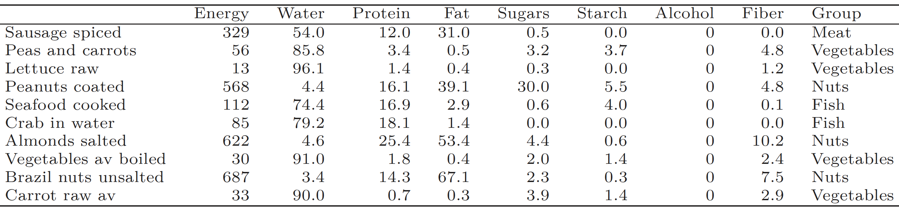
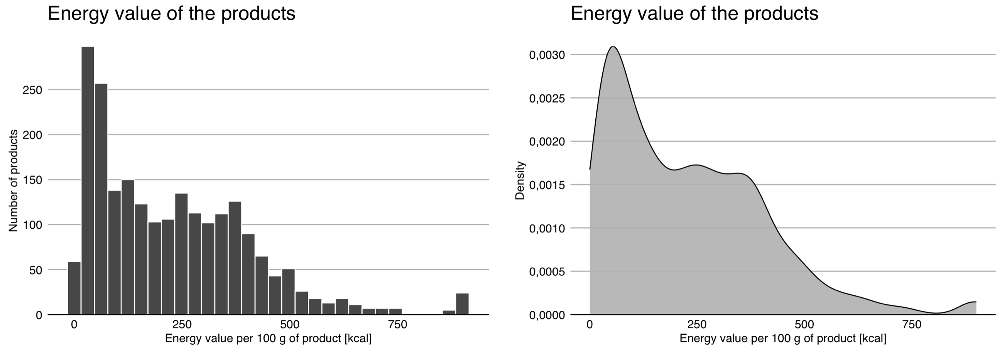
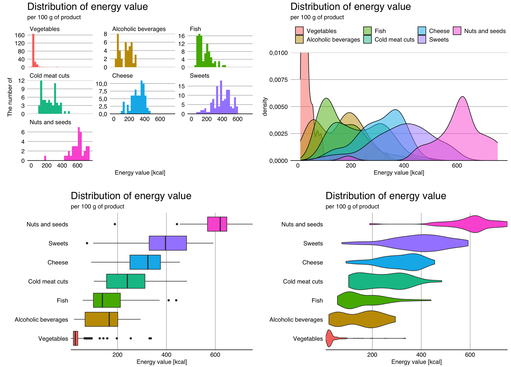
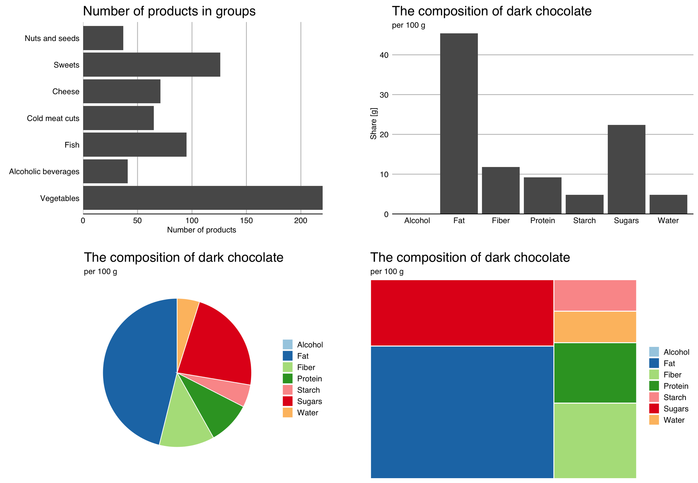
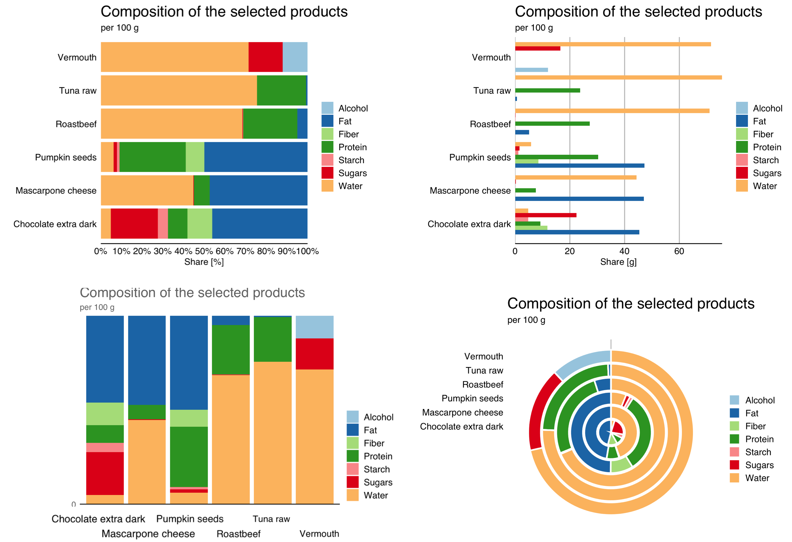
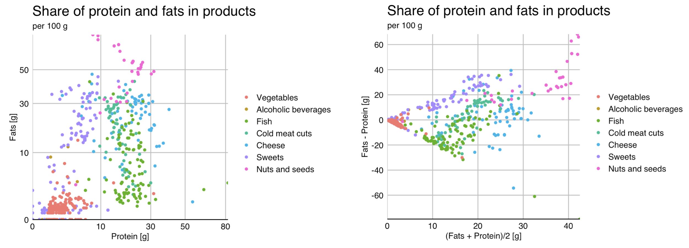
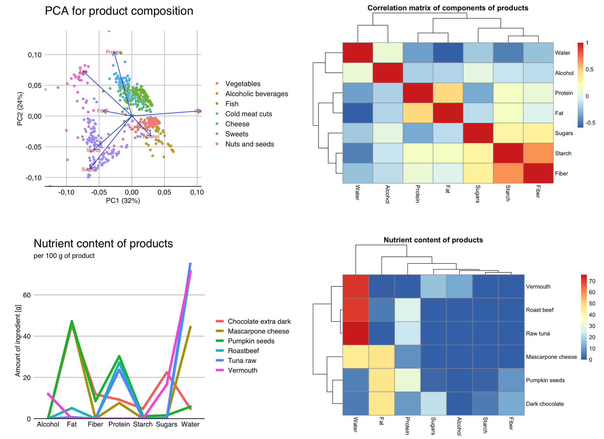

2 Tried and Tested
In this chapter, we will talk about the most tried and tested and most commonly used ways of presenting statistical data. The paradox of data analysis is that every data is different, but to most data we ask very similar questions. In my professional life, I have been involved in the analysis of hundreds, if not thousands, of data sets. But the vast majority of these analyses have consisted of similar questions about what is most important in the data: What values and how often does a particular variable take on – this is a question about its distribution. How do subgroups of observations differ – this is a question about differences in distributions. Whether there is a correlation between two variables – this is a question about correlations. Whether a relationship between multiple variables is apparent in the whole data – this is a question about structure. Statisticians have developed patterns of answers to these questions that allow large amounts of information to be summarised clearly. So let’s see what charts are a proven methods of presenting the distribution of a single variable, the distributions of variables in subgroups, correlations and identifying structure.
The following examples are based on the recently published Dutch food composition database (NEVO), which was developed by the Rijksinstituut voor Volksgezondheid en Milieu (RIVM) – the Dutch National Institute for Public Health and the Environment (RIVM and Environment 2021). This database contains data on the composition of more than 2200 food products and more than 130 ingredients (protein, carbohydrates, fats and fatty acids, vitamins and minerals).

We will return to this data in the Code It Yourself section, where we will show you how to reproduce the graphs presented below. Dear Reader, if you would like to experiment with this data yourself, skip to the last section, download the relevant data and experiment with presenting the food information.
The data available is very interesting, detailing 2,200 food products. The products are divided into 27 groups (meats, dairy, vegetables, etc.), but due to the volume of this book, below we look at only 7 of these groups and the 7 main components of these products: amounts of protein, fibre, carbohydrate, starch, fat, water and alcohol. We will be exploring these data while learning about proven types of statistical graphs.
Exploring data, most often in the first step we want to look at individual variables, one by one. Variable by variable, we want to find out which values are taken frequently and which rarely. Later, we check whether these distributions differ within subgroups or whether one variable correlates with others.
2.1 Quantitative variable
A quantitative variable is a variable describing the amounts of a certain quantity, e.g., height, age, weight, density, etc. For example, in the data presented, we have information for each product about the energy value per 100 g of that product. In the data, there are products with low energy values and those with very high values. But what values can we expect to find there? A histogram will help us answer this question.
Histogram was first introduced by Karl Pearson in the late 19th century. The range of possible values of a quantitative variable is divided into intervals of equal length, and then for each interval, it is shown how many observations belong to it. The number of intervals often depends on the amount of data, the more data, the more intervals we can define. In the example below, we have 30 intervals, each with a width of 30 units.

For a small number of data and a large number of intervals, the bars may have a high variability, making it difficult to read the relationship. In such a situation, smoothing can be applied, e.g., using a so-called kernel density estimator.
Figure 2.2 shows both approaches to visualize the distribution of a quantitative variable. . It can be seen from these that we have a fair number of products with very low energy values in the data, most products have an energy value of up to 500 kcal, but there are also a few whose energy value exceeds 700 kcal.
2.2 Quantitative variable in subgroups
If we already know everything about the behavior of one variable, the next step is usually to understand how similar or different the behavior of that variable is in subgroups of observations.
Of course, we can plot side-by-side distributions of a particular variable separately for each group of observations. Such a technique for showing data in a grid of graphs is called small multiples. The first panel in the Figure 2.3 shows the distribution of energy values across subgroups using the aforementioned technique.
In the case of densities, a common solution is to draw curves for subgroups with different colors on a single panel. This makes it easy to see whether the distributions for two groups overlap or differ. An example of this solution is shown in the second panel of the chart below.

An even more compact way of presenting the distribution is the so-called box-and-whisker plot, or simply boxplot. More than 60 years ago, John Tukey proposed to reduce distribution information to five numbers (the so-called Tukey’s five), namely the minimum, maximum, middle (median) and quartiles. These five numbers divide the set of observations into four parts of equal size. They can be represented by a box plot, in which the box is bounded by the quartiles (known as hinges), the line in the center of the box corresponds to the median, while the whiskers extend to the minimum and maximum values. It is also often assumed that the whiskers cannot be longer than one and a half times the width of the box, and all observations beyond this range are marked with dots - this is also the case in Figure 2.3. Such a plot allows a clear representation of the distribution for many subgroups.
The disadvantage of box plots is the difficulty in mapping multimodal distributions, as modality information is lost. The solution is violin plots, in which the density of the distribution of observations is presented in a way that resembles a violin, hence the name of this chart. It’s easier to see possible multimodality on it, but it’s harder to see what are the median and quartiles.
In the ?fig-mixed, we see that most vegetables have a very low energy value – except for a few that reach above 200 kcal per 100 g (turns out to be dried seaweed or tomatoes). The exact opposite is true for nuts and seeds, most of which have a caloric value of more than 400 kcal per 100 g.
2.3 Qualitative variable
A qualitative variable is a variable that is not quantitative, its values are not measurements, but most often refer to various possible outcomes. Examples of such variables are eye color, nationality, occupation, etc. In the data described, the qualitative variable is the type of nutrient.
To see what values this variable takes and how often it takes them, it is most convenient to use a bar plot – see the first panels of the Figure 2.4. You can draw the bars vertically, but it is often better to draw them horizontally to have more space for category names on the axes. A bar chart is great for accurately representing counts.

If our goal is to show the relative frequencies of levels of a qualitative variable, pie charts or treemaps, presented in the third and fourth panels of the Figure 2.4, can be an interesting alternative. The precision of reading relative values is much lower, but it is easier to assess how many categories need to be combined to get a total of 25% or 50% of the total. Pie charts also have a fairly large group of opponents (rightly) claiming that any data can be presented more clearly in a plot of a different type.
2.4 Qualitative variable in subgroups
And how to show the relationship between qualitative variables in subgroups? You can use a bar plot or donut chart for this. Examples of both charts are shown in Figure 2.5.
If we set the bars on top of each other and normalize them, it is easier to see the relative proportions within the groups. If we set them next to each other, it will be easier to compare absolute values.
Using a mosaic plot allows you to show both marginal and conditional distributions, but reading such charts requires some skill and quite a few people have problems with them, so this is more of a solution for advanced users. Using a donut chart inherits all the drawbacks of pie charts (such as difficulties in reading angles).

The above plots show the same data – the share of seven components in six randomly selected products. Which of these graphs most clearly shows information about these ingredients? Notice, Dear Reader, that for the last three products (pumpkin seeds, mascarpone cheese, dark chocolate), the proportion of fats is similar at about 45%. For two products, we have a similar amount of fiber (pumpkin seeds, dark chocolate). I leave it to the reader to judge which of these charts allows you to quickly notice this information.
2.5 Pair of quantitative variables
The most common way to show the relationship between two quantitative variables are scatter plots. On one axis one variable is presented, on the other another one. Sometimes a trend line can be drawn to make the relationship more visible. An example of such a chart is shown in Figure 2.6.
Scatter plots have a great many variations. One common modification is axis transformations. For skewed variables, especially those centered around zero, square root transformation or logarithm transformation are useful techniques. The left panel of the chart below uses a square root transformation for both axes, so that the points are more evenly distributed throughout the chart, rather than just clustered around zero.
Another popular modification of scatter plots are Bland-Altman plots, also called Tukey mean-difference plots (the former name is often used in biochemistry and medicine). On one axis the average of two variables is drawn, and on the other axis the difference between the variables is presented. This juxtaposition of variables makes it possible to assess their correspondence. An example of such a graph is shown in the right panel of the Figure 2.6. Overall, it can be seen that it is fats that account for a larger share than proteins in the composition of the products analyzed, the exception being fish products.

2.6 Multiple variables
Once we know the relationships for a pair of variables, the next step is to explore a larger group of variables.
There are many statistical techniques to better understand the joint relationships between variables. For quantitative data, a frequently used technique is principal component analysis – PCA. It allows both observations and variables to be presented in a two-dimensional space in such a way as to best preserve information about which variables are correlated with each other, and at the same time which observations have high values of each variable. Analyzing the result of the PCA analysis shown in the Figure 2.7, one might suspect that starch and sugars are positively correlated, while water is positively correlated with the amount of alcohol and negatively correlated with other variables, especially fiber. The vertical axis distinguishes products rich in protein and fat from those rich in sugars and starches.

A common summary technique for a set of variables is to use correlation plots, such as those presented by correlation matrix heat maps, as in the figure above. They allow us to see which variables are most strongly correlated and how many such correlated clusters we have.
If we want to present individual observations, taking into account multiple variables for them, then heat map plots or parallel coordinates plots can be useful. Both of these types of plots are shown in the last two panels of the Figure 2.7.
2.7 Tasks
Let’s look at a few news portals where clear and consistent data communication is important.
- A place where huge amounts of data are consumed instantaneously are stock exchanges. Take a look at stock quotes, currency exchange rates, indices, for example at https://www.barchart.com/stocks or https://finance.yahoo.com. What type of data is presented here? What mechanisms have been used to facilitate rapid analysis of hundreds of indices simultaneously? How was it handled to show sales volume and price simultaneously?
- PISA is a periodic testic program of school skills among 15-year-olds from dozens of countries around the world. Every three years, the skills of hundreds of thousands of students are analyzed and matched against countless indicators. PISA reports are strewn with data and plots. Take a look at one of the publications on this data, available at https://www.oecd.org/pisa/. What two types of plots are most commonly used in it. What mechanisms have been used to make the data in these plots easier to read?
- Probably the largest, and certainly the most diverse, database in Europe is that of Eurostat, the statistical office that collects a wide variety of data on the countries of the European Union and beyond. Take a look at a selected publication from https://ec.europa.eu/eurostat and think about what kind of plots are most often used there. Why? What mechanisms are used to make the data on these plots easier to read?
If you’d like to learn more about classic plots for presenting all sorts of data and relationships, you may be interested in the essay Od kuchni from the book Odkrywać! Ujawniać! Objaśniać! (Biecek 2016) (only available in Polish).